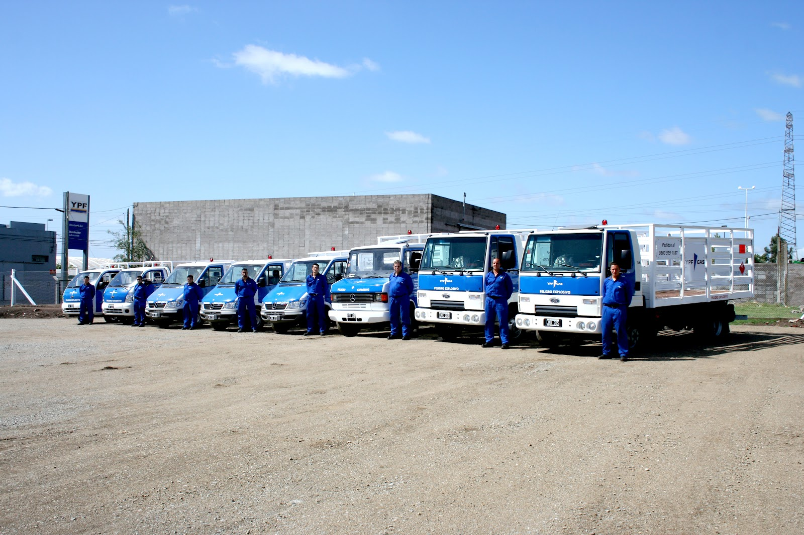
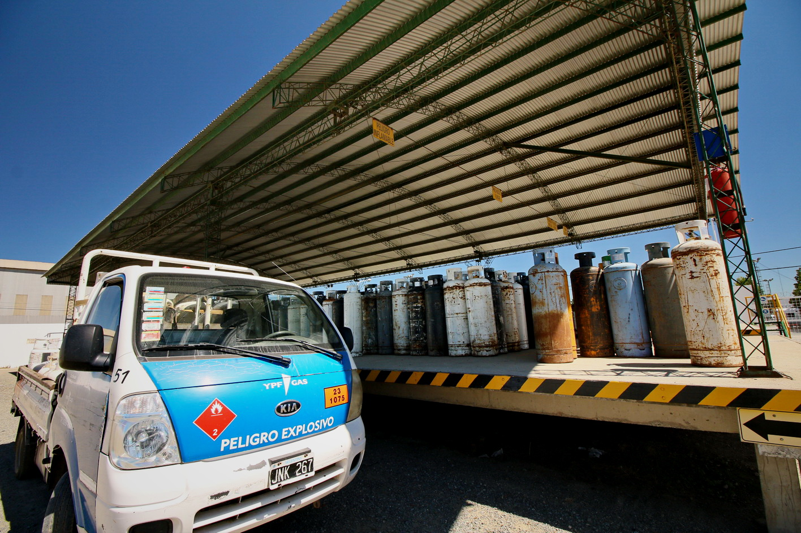

Garrafa de 10 kg
Recambio de envase para hogares y comercios que necesitan reposición clara y directa. El foco está en pedir la garrafa, tener listo el envase vacío y recibir una unidad nueva sin sumar pasos extra al pedido.
Distribuidor oficial de GLP en Tandil
Petrogas reparte garrafas en Tandil desde su playa de distribución en Tierra del Fuego 1355. Atención práctica por teléfono, recambio de envase y entrega coordinada.
Qué pedís
El pedido se resuelve por llamada: coordinás el horario, preparás el envase vacío y el repartidor lleva la nueva garrafa a tu domicilio. La propuesta está concentrada en garrafas de 10 kg, reparto a domicilio, distribuidor oficial GLP y recambio de envase, sin vueltas para hogares y comercios que necesitan resolver la reposición dentro del horario de atención.
Recambio de envase para hogares y comercios que necesitan reposición clara y directa. El foco está en pedir la garrafa, tener listo el envase vacío y recibir una unidad nueva sin sumar pasos extra al pedido.
La entrega se coordina al 0249 449-4068, dentro del horario de atención: lunes a viernes de 8 a 16 y sábados de 8 a 12. El llamado permite confirmar el domicilio y ordenar el reparto antes de salir hacia la zona.
Clientes destacan que los repartidores ayudan a colocar la nueva garrafa. Esa asistencia aparece en las reseñas junto con el cumplimiento en tiempo y forma de la entrega.

Fotos de nuestra operación
Oficina, portón, flota y envases conviven en el mismo predio de Tierra del Fuego 1355. Ver la playa de distribución ayuda a entender de dónde sale el reparto y por qué el pedido telefónico se apoya en una base operativa concreta, con camión, envases y atención en los horarios informados.

Reseñas de reparto
Dos reseñas literales de clientes que describen la entrega y la atención.
Muy serviciales los repartidores, cumplen en tiempo y forma con la entrega y te ayudan a colocar la nueva garrafa.
Excelente servicio de atención, muy buena calidad de el producto.
Cómo pedir
Del llamado a la entrega, con el horario de atención siempre claro: lunes a viernes de 8 a 16, sábados de 8 a 12 y domingo cerrado.
Llamá al 0249 449-4068 y pedí tu recambio de garrafa de 10 kg. En la misma llamada podés ordenar la entrega y dejar claro el domicilio.
Coordiná el horario de entrega en tu domicilio dentro de la franja de atención. El reparto se prepara desde la playa de distribución de Tierra del Fuego 1355.
Tené a mano el envase vacío para recibir la nueva garrafa. La reseña destacada cuenta que el repartidor cumple en tiempo y forma y ayuda a colocarla.
Contacto directo
Atención de lunes a viernes 8 a 16 y sábados 8 a 12. Domingo cerrado. Dirección: Tierra del Fuego 1355, Tandil.